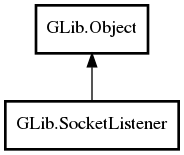

SocketListener
Object Hierarchy:

Description:
public class SocketListener :
Object
Namespace: GLib
Package: gio-2.0
Content:
Properties:
Creation methods:
Methods:
- public SocketConnection accept (out Object source_object = null, Cancellable? cancellable = null) throws Error
- public async SocketConnection accept_async (Cancellable? cancellable = null, out Object source_object = null) throws Error
- public Socket accept_socket (out Object source_object = null, Cancellable? cancellable = null) throws Error
- public async Socket accept_socket_async (Cancellable? cancellable = null, out Object source_object = null) throws Error
- public bool add_address (SocketAddress address, SocketType type, SocketProtocol protocol, Object? source_object, out SocketAddress effective_address) throws Error
- public uint16 add_any_inet_port (Object? source_object) throws Error
- public bool add_inet_port (uint16 port, Object? source_object) throws Error
- public bool add_socket (Socket socket, Object? source_object) throws Error
- public virtual void changed ()
- public void close ()
- public void set_backlog (int listen_backlog)